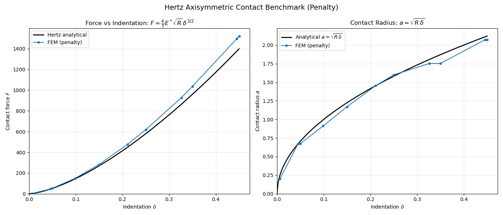

Note
Go to the end to download the full example code.
Hertz axisymmetric contact benchmark: rigid sphere on elastic half-space
Validates penalty contact in fedoo’s 2Daxi modeling space against the
classical Hertz (1882) analytical solution for a rigid sphere pressed
onto an elastic half-space.
The 2D axisymmetric formulation makes the 3D problem computationally cheap (2D mesh on the r-z plane) while producing the full 3D result, including the \(2 \pi r\) circumferential integration.
Two-body setup in the r-z plane:
elastic substrate (half-space approximation): a large rectangle;
quasi-rigid parabolic indenter: a thin body whose bottom surface follows \(z(r) = H_{sub} + g + r^2/(2R)\), with \(g\) the initial gap.
Analytical solution for a rigid indenter on an elastic body, with the effective modulus \(E^* = E/(1-\nu^2)\):
The numerical indentation \(\delta\) is taken as the prescribed indenter displacement minus the gap; it ignores the compliance of the finite substrate (height \(H_{sub} = 25 \approx 11\,a\), clamped at its bottom). The contact radius is estimated with the Hertz property \(u_z(a) = \delta/2\), which holds for displacements measured from the far field, whereas here \(u_z\) is measured from the fixed bottom. Both approximations bias the estimated contact radius, so its agreement with the analytical value is indicative only. The substrate uses a graded 101 x 101 node grid.
Note
This benchmark uses the penalty method. IPCContact also supports
2Daxi (collisions weighted by \(2 \pi r\)) and can be used
instead.

Substrate top nodes: 101
Indenter bottom edges: 50
a_max = 2.236, E* = 1098.9, gap = 0.05
==============================================================
HERTZ AXISYMMETRIC CONTACT BENCHMARK (Penalty)
==============================================================
Iter 1 - Time: 0.05000 - dt 0.05000 - NR iter: 2 - Err: 0.00000
Iter 2 - Time: 0.11250 - dt 0.06250 - NR iter: 3 - Err: 0.00142
Iter 3 - Time: 0.19062 - dt 0.07812 - NR iter: 5 - Err: 0.00028
Iter 4 - Time: 0.20000 - dt 0.09766 - NR iter: 2 - Err: 0.00000
Iter 5 - Time: 0.29766 - dt 0.09766 - NR iter: 4 - Err: 0.00001
Iter 6 - Time: 0.40000 - dt 0.12207 - NR iter: 4 - Err: 0.00000
Iter 7 - Time: 0.52207 - dt 0.12207 - NR iter: 4 - Err: 0.00001
Iter 8 - Time: 0.60000 - dt 0.15259 - NR iter: 3 - Err: 0.00005
Iter 9 - Time: 0.75259 - dt 0.15259 - NR iter: 3 - Err: 0.00126
Iter 10 - Time: 0.80000 - dt 0.19073 - NR iter: 2 - Err: 0.00002
Iter 11 - Time: 0.99073 - dt 0.19073 - NR iter: 3 - Err: 0.00257
Iter 12 - Time: 1.00000 - dt 0.23842 - NR iter: 3 - Err: 0.00000
Solve time: 4.57 s
--------------------------------------------------------------
RESULTS SUMMARY
--------------------------------------------------------------
Quantity Numerical Analytical
--------------------------------------------------------------
Final indentation 0.4500 0.4500
Final force F 1521.53 1398.67
F error 8.78%
Contact radius a 2.0705 2.1213
a error -2.40%
--------------------------------------------------------------
Per-increment detail
--------------------------------------------------------------
Inc Time Delta F_num F_ana Err% a_num a_ana
1 0.0500 -0.0250 0.00 0.00 0.00 0.0000 0.0000
2 0.1125 0.0062 2.27 2.29 -0.94 0.2000 0.2500
3 0.1906 0.0453 46.00 44.69 2.94 0.6750 0.6731
4 0.2000 0.0500 53.40 51.80 3.09 0.6750 0.7071
5 0.2977 0.0988 149.41 143.95 3.79 0.9121 0.9941
6 0.4000 0.1500 282.69 269.17 5.02 1.1718 1.2247
7 0.5221 0.2110 477.11 449.19 6.21 1.4524 1.4527
8 0.6000 0.2500 618.31 579.17 6.76 1.6000 1.5811
9 0.7526 0.3263 927.17 863.60 7.36 1.7523 1.8064
10 0.8000 0.3500 1035.86 959.40 7.97 1.7523 1.8708
11 0.9907 0.4454 1497.63 1377.13 8.75 2.0705 2.1104
12 1.0000 0.4500 1521.53 1398.67 8.78 2.0705 2.1213
Benchmark plot saved to results/hertz_axisymmetric_benchmark.png
import fedoo as fd
import numpy as np
import os
from time import time
if "__file__" in globals():
os.chdir(os.path.dirname(os.path.abspath(__file__)))
# =========================================================================
# Parameters
# =========================================================================
R = 10.0 # sphere radius
E = 1000.0 # elastic modulus (substrate)
nu = 0.3 # Poisson's ratio
E_star = E / (1.0 - nu**2) # effective modulus (rigid indenter)
E_rigid = 1e6 # quasi-rigid indenter
nu_rigid = 0.3
gap = 0.05 # initial gap at r=0 between substrate top and indenter
delta_max = 0.5 # max indentation at tmax=1
a_max = np.sqrt(R * delta_max) # max contact radius ~ 2.236
R_domain = 25.0 # substrate radial extent (~11 * a_max)
H_sub = 25.0 # substrate height
R_indenter = 5.0 # indenter radial extent (~2.2 * a_max)
H_indenter = 2.0 # indenter thickness
# Mesh resolution (number of nodes along each axis)
nx_sub = 101
ny_sub = 101
nx_ind = 51
ny_ind = 5
# =========================================================================
# Analytical solution
# =========================================================================
def hertz_analytical(R, E_star, delta):
"""Hertz force-displacement for rigid sphere on elastic half-space."""
delta = np.asarray(delta, dtype=float)
d_pos = np.maximum(delta, 0.0)
F = 4.0 / 3.0 * E_star * np.sqrt(R) * d_pos**1.5
a = np.sqrt(R * d_pos)
p0 = np.where(delta > 0, 2.0 * E_star / np.pi * np.sqrt(d_pos / R), 0.0)
return F, a, p0
# =========================================================================
# Mesh
# =========================================================================
fd.ModelingSpace("2Daxi")
# --- Substrate (elastic half-space approximation) ---
mesh_sub = fd.mesh.rectangle_mesh(
nx=nx_sub,
ny=ny_sub,
x_min=0,
x_max=1,
y_min=0,
y_max=1,
elm_type="quad4",
)
# Biased node placement: dense near r=0 and z=H_sub (contact zone)
nodes = mesh_sub.nodes
nodes[:, 0] = R_domain * nodes[:, 0] ** 1.5 # radial grading
nodes[:, 1] = H_sub * (1.0 - (1.0 - nodes[:, 1]) ** 1.5) # axial: dense at top
mesh_sub.element_sets["substrate"] = np.arange(mesh_sub.n_elements)
# --- Indenter (quasi-rigid parabolic body) ---
mesh_ind = fd.mesh.rectangle_mesh(
nx=nx_ind,
ny=ny_ind,
x_min=0,
x_max=1,
y_min=0,
y_max=1,
elm_type="quad4",
)
ind_nodes = mesh_ind.nodes
r_frac = ind_nodes[:, 0].copy()
z_frac = ind_nodes[:, 1].copy()
# Radial grading (dense near r=0)
r_ind = R_indenter * r_frac**1.5
# Bottom surface follows parabola: z(r) = H_sub + gap + r^2/(2R)
# Top surface: z = z_bottom + H_indenter
z_bottom = H_sub + gap + r_ind**2 / (2.0 * R)
ind_nodes[:, 0] = r_ind
ind_nodes[:, 1] = z_bottom + z_frac * H_indenter
mesh_ind.element_sets["indenter"] = np.arange(mesh_ind.n_elements)
# Store indenter bottom node indices before stacking
indenter_bottom_local = list(mesh_ind.node_sets["bottom"])
# --- Stack meshes ---
n_sub = mesh_sub.n_nodes
mesh = fd.Mesh.stack(mesh_sub, mesh_ind)
# Indenter bottom/top nodes in global numbering
indenter_bottom_global = set(n + n_sub for n in indenter_bottom_local)
indenter_top_local = list(mesh_ind.node_sets["top"])
nodes_ind_top = np.array([n + n_sub for n in indenter_top_local])
# =========================================================================
# Contact setup
# =========================================================================
# Slave nodes: top surface of substrate
nodes_sub_top = mesh.find_nodes("Y", H_sub)
nodes_sub_top = nodes_sub_top[nodes_sub_top < n_sub] # only substrate nodes
# Master surface: bottom of indenter only (filter out top/side edges)
surf_ind_full = fd.mesh.extract_surface(mesh.extract_elements("indenter"))
keep = [
i
for i, elem in enumerate(surf_ind_full.elements)
if all(int(n) in indenter_bottom_global for n in elem)
]
from fedoo.core.mesh import Mesh as _Mesh
surf_indenter = _Mesh(
mesh.nodes,
surf_ind_full.elements[keep],
surf_ind_full.elm_type,
name="indenter_bottom",
)
print(f"Substrate top nodes: {len(nodes_sub_top)}")
print(f"Indenter bottom edges: {len(keep)}")
print(f"a_max = {a_max:.3f}, E* = {E_star:.1f}, gap = {gap}")
contact = fd.constraint.Contact(
nodes_sub_top,
surf_indenter,
search_algorithm="bucket",
)
contact.contact_search_once = False
contact.eps_n = 1e5 # ~100*E, penalty stiffness
contact.max_dist = gap + delta_max + 0.5
# =========================================================================
# Material
# =========================================================================
mat_sub = fd.constitutivelaw.ElasticIsotrop(E, nu)
mat_ind = fd.constitutivelaw.ElasticIsotrop(E_rigid, nu_rigid)
material = fd.constitutivelaw.Heterogeneous(
(mat_sub, mat_ind),
("substrate", "indenter"),
)
# =========================================================================
# Assembly and problem
# =========================================================================
wf = fd.weakform.StressEquilibrium(material, nlgeom=False)
solid = fd.Assembly.create(wf, mesh)
assembly = fd.Assembly.sum(solid, contact)
pb = fd.problem.NonLinear(assembly)
if not os.path.isdir("results"):
os.mkdir("results")
pb.add_output("results/hertz_axi", solid, ["Disp", "Stress"])
# =========================================================================
# Boundary conditions
# =========================================================================
# Bottom of substrate: fix axial (Y), free radial
nodes_bottom = mesh.find_nodes("Y", 0)
pb.bc.add("Dirichlet", nodes_bottom, "DispY", 0)
# Symmetry axis (r=0): fix radial displacement
nodes_axis = mesh.find_nodes("X", 0)
pb.bc.add("Dirichlet", nodes_axis, "DispX", 0)
# Top of indenter: prescribe downward displacement
pb.bc.add("Dirichlet", nodes_ind_top, "DispY", -delta_max)
# =========================================================================
# Solver
# =========================================================================
pb.set_nr_criterion("Displacement", tol=5e-3, max_subiter=15)
# --- Tracking ---
r_top = mesh.nodes[nodes_sub_top, 0]
history = {"time": [], "reaction_y": [], "a_num": []}
def track(pb):
history["time"].append(pb.time)
F = pb.get_ext_forces("Disp")
history["reaction_y"].append(np.sum(F[1, nodes_ind_top]))
# Estimate contact radius from displacement profile.
# In Hertz theory u_z(a) = delta/2 (displacements measured from the far
# field), so the contact edge is taken where the displacement drops below
# half the center value. Here uy is measured from the clamped bottom of a
# finite substrate, which biases this estimate.
disp = pb.get_disp()
uy = disp[1, nodes_sub_top]
uy_center = np.min(uy) # most negative = max compression
if uy_center < -1e-10:
in_contact = uy < 0.5 * uy_center
a = np.max(r_top[in_contact]) if np.any(in_contact) else 0.0
else:
a = 0.0
history["a_num"].append(a)
print("\n" + "=" * 62)
print(" HERTZ AXISYMMETRIC CONTACT BENCHMARK (Penalty)")
print("=" * 62)
t0 = time()
pb.nlsolve(
dt=0.05,
tmax=1,
update_dt=True,
print_info=1,
interval_output=0.2,
callback=track,
exec_callback_at_each_iter=True,
)
solve_time = time() - t0
print(f"\nSolve time: {solve_time:.2f} s")
# =========================================================================
# Comparison with analytical solution
# =========================================================================
t_num = np.array(history["time"])
F_num = -np.array(history["reaction_y"]) # reaction is negative (compression)
delta_num = delta_max * t_num - gap # effective indentation
# Analytical curve
delta_ana = np.linspace(0, delta_max - gap, 200)
F_ana, a_ana, p0_ana = hertz_analytical(R, E_star, delta_ana)
# Numerical at final step
delta_final = delta_num[-1]
F_final = F_num[-1]
F_ana_final = hertz_analytical(R, E_star, delta_final)[0]
print("\n" + "-" * 62)
print(" RESULTS SUMMARY")
print("-" * 62)
print(f"{'Quantity':<30} {'Numerical':>15} {'Analytical':>15}")
print("-" * 62)
print(f"{'Final indentation':<30} {delta_final:15.4f} {delta_max - gap:15.4f}")
print(f"{'Final force F':<30} {F_final:15.2f} {float(F_ana_final):15.2f}")
err_pct = 100 * (F_final - float(F_ana_final)) / float(F_ana_final)
print(f"{'F error':<30} {err_pct:14.2f}%")
# Contact radius at final step
a_num_arr = np.array(history["a_num"])
a_num_final = a_num_arr[-1]
a_ana_val = np.sqrt(R * max(delta_final, 0))
print(f"{'Contact radius a':<30} {a_num_final:15.4f} {a_ana_val:15.4f}")
if a_ana_val > 0:
a_err = 100 * (a_num_final - a_ana_val) / a_ana_val
print(f"{'a error':<30} {a_err:14.2f}%")
print()
# =========================================================================
# Per-increment detail
# =========================================================================
print("-" * 62)
print(" Per-increment detail")
print("-" * 62)
print(
f"{'Inc':>4} {'Time':>8} {'Delta':>10} {'F_num':>12} {'F_ana':>12} {'Err%':>8} {'a_num':>8} {'a_ana':>8}"
)
for i in range(len(history["time"])):
d = delta_num[i]
f_n = F_num[i]
a_n = a_num_arr[i]
if d > 0:
f_a = 4.0 / 3.0 * E_star * np.sqrt(R) * d**1.5
err = 100 * (f_n - f_a) / f_a if f_a > 1e-10 else 0
a_a = np.sqrt(R * d)
else:
f_a = 0.0
err = 0.0
a_a = 0.0
print(
f"{i+1:4d} {t_num[i]:8.4f} {d:10.4f} {f_n:12.2f} {f_a:12.2f} {err:8.2f} {a_n:8.4f} {a_a:8.4f}"
)
print()
# =========================================================================
# Plots
# =========================================================================
try:
import matplotlib.pyplot as plt
fig, axes = plt.subplots(1, 2, figsize=(14, 6))
fig.suptitle("Hertz Axisymmetric Contact Benchmark (Penalty)", fontsize=14)
# --- Force vs indentation ---
ax = axes[0]
ax.plot(delta_ana, F_ana, "k-", linewidth=2, label="Hertz analytical")
mask = delta_num > 0
if np.any(mask):
ax.plot(
delta_num[mask],
F_num[mask],
"o-",
color="tab:blue",
markersize=4,
label="FEM (penalty)",
)
ax.set_xlabel(r"Indentation $\delta$")
ax.set_ylabel(r"Contact force $F$")
ax.set_title(r"Force vs Indentation: $F = \frac{4}{3} E^* \sqrt{R}\, \delta^{3/2}$")
ax.legend()
ax.grid(True, alpha=0.3)
ax.set_xlim(left=0)
ax.set_ylim(bottom=0)
# --- Contact radius vs indentation ---
ax = axes[1]
ax.plot(
delta_ana, a_ana, "k-", linewidth=2, label=r"Analytical $a = \sqrt{R\,\delta}$"
)
# Plot FEM contact radius at each increment (only where delta > 0)
mask_a = delta_num > 0
if np.any(mask_a):
ax.plot(
delta_num[mask_a],
a_num_arr[mask_a],
"o-",
color="tab:blue",
markersize=4,
label="FEM (penalty)",
)
ax.set_xlabel(r"Indentation $\delta$")
ax.set_ylabel(r"Contact radius $a$")
ax.set_title(r"Contact Radius: $a = \sqrt{R\,\delta}$")
ax.legend()
ax.grid(True, alpha=0.3)
ax.set_xlim(left=0)
ax.set_ylim(bottom=0)
plt.tight_layout()
plt.savefig("results/hertz_axisymmetric_benchmark.png", dpi=150)
print("Benchmark plot saved to results/hertz_axisymmetric_benchmark.png")
plt.show()
except ImportError:
print("matplotlib not available -- skipping plots.")
Total running time of the script: (0 minutes 5.129 seconds)